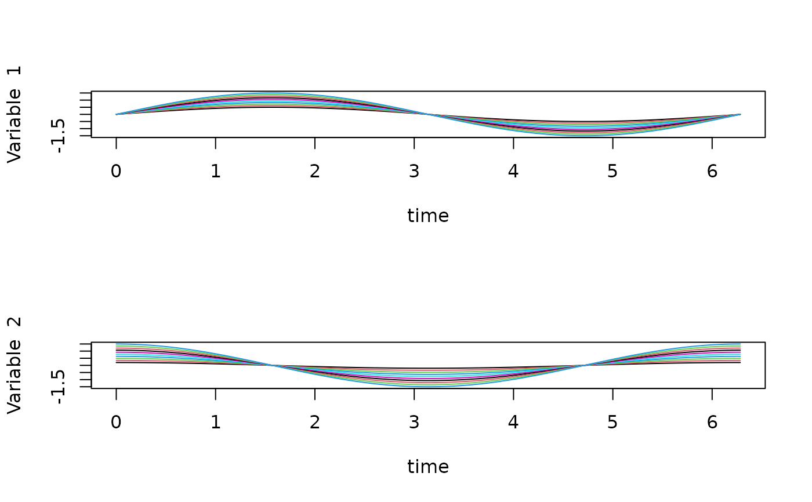
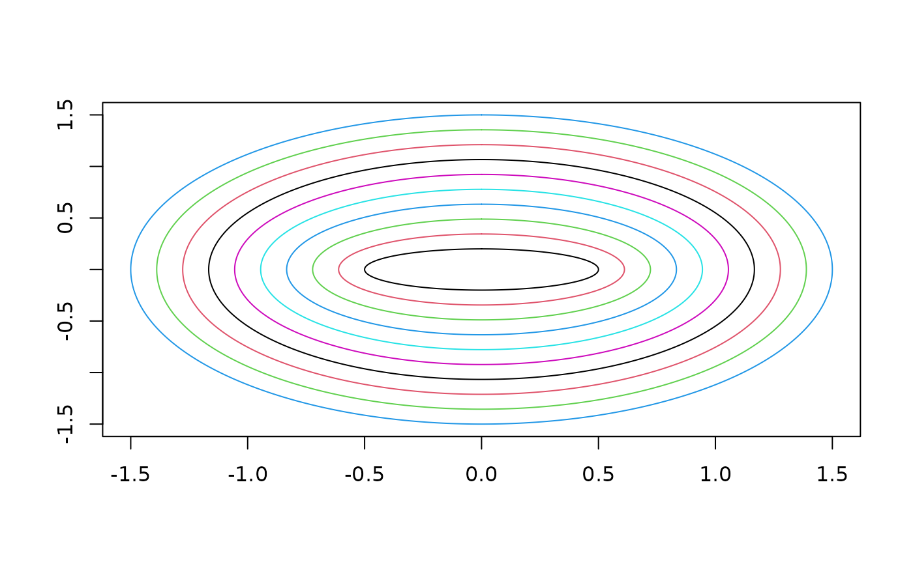

Define a Set of Multivariate Multidimensional Functional Data objects
Source:R/mvmfdClass.R
mvmfd.RdThe `mvmfd` class represents functional data ...
Constructor for `mvmfd` objects (same as `Mvmfd`)
Active bindings
basisA `mvbasismfd` object
coefsa matrix of the coefficients.
nobsnumber of observation
nvarnumber of variables
Methods
Method eval()
Eval method for `mvmfd` objects
Method print()
Print method for `mvmfd` objects
Examples
require(fda)
bs1 <- create.fourier.basis(c(0, 2 * pi), 5)
bs2 <- create.bspline.basis(c(0, 1), 7)
bs3 <- create.exponential.basis(c(0, 2), 3)
nobs <- 10
argval1 <- seq(0, 2 * pi, length.out = 12)
X1 <- outer(sin(argval1), seq(0.5, 1.5, length.out = nobs))
mdbs1 <- Basismfd(bs1)
mfd1 <- Mfd(argval1, X1, mdbs1)
mdbs2 <- Basismfd(bs1)
argval2 <- argval1
X2 <- outer(cos(argval2), seq(0.2, 1.5, length.out = nobs))
mfd2 <- Mfd(argval2, X2, mdbs1)
mvmfd1 <- Mvmfd(mfd1, mfd2)
mvmfd1[1]
#> A 'mvmfd' object with 2 variable(s):
#>
#> Variable 1:
#> A 1-Dimensional 'mfd' object:
#> nobs: 1
#> basis 1:
#> type: fourier
#> nbasis: 5
#> support: 0 6.283185
#>
#> Variable 2:
#> A 1-Dimensional 'mfd' object:
#> nobs: 1
#> basis 1:
#> type: fourier
#> nbasis: 5
#> support: 0 6.283185
mvmfd1[1, 1]
#> A 1-Dimensional 'mfd' object:
#> nobs: 1
#> basis 1:
#> type: fourier
#> nbasis: 5
#> support: 0 6.283185
mvmfd1[1:5, 2]
#> A 1-Dimensional 'mfd' object:
#> nobs: 5
#> basis 1:
#> type: fourier
#> nbasis: 5
#> support: 0 6.283185
mvmfd1[, 1]
#> A 1-Dimensional 'mfd' object:
#> nobs: 10
#> basis 1:
#> type: fourier
#> nbasis: 5
#> support: 0 6.283185
mvmfd1[1:5, ]
#> A 'mvmfd' object with 2 variable(s):
#>
#> Variable 1:
#> A 1-Dimensional 'mfd' object:
#> nobs: 5
#> basis 1:
#> type: fourier
#> nbasis: 5
#> support: 0 6.283185
#>
#> Variable 2:
#> A 1-Dimensional 'mfd' object:
#> nobs: 5
#> basis 1:
#> type: fourier
#> nbasis: 5
#> support: 0 6.283185
evalarg <- list(argval1, argval2)
mvmfd1$eval(evalarg)
#> [[1]]
#> [,1] [,2] [,3] [,4] [,5]
#> [1,] 1.175889e-17 -5.566336e-17 -5.989427e-17 -8.533914e-18 4.282644e-17
#> [2,] 2.703204e-01 3.303916e-01 3.904628e-01 4.505340e-01 5.106052e-01
#> [3,] 4.548160e-01 5.558862e-01 6.569564e-01 7.580267e-01 8.590969e-01
#> [4,] 4.949107e-01 6.048909e-01 7.148710e-01 8.248512e-01 9.348314e-01
#> [5,] 3.778748e-01 4.618470e-01 5.458191e-01 6.297913e-01 7.137635e-01
#> [6,] 1.408663e-01 1.721699e-01 2.034735e-01 2.347771e-01 2.660807e-01
#> [7,] -1.408663e-01 -1.721699e-01 -2.034735e-01 -2.347771e-01 -2.660807e-01
#> [8,] -3.778748e-01 -4.618470e-01 -5.458191e-01 -6.297913e-01 -7.137635e-01
#> [9,] -4.949107e-01 -6.048909e-01 -7.148710e-01 -8.248512e-01 -9.348314e-01
#> [10,] -4.548160e-01 -5.558862e-01 -6.569564e-01 -7.580267e-01 -8.590969e-01
#> [11,] -2.703204e-01 -3.303916e-01 -3.904628e-01 -4.505340e-01 -5.106052e-01
#> [12,] -1.107058e-16 -2.053424e-16 -2.367877e-16 -2.126417e-16 -1.884957e-16
#> [,6] [,7] [,8] [,9] [,10]
#> [1,] -8.600566e-18 -8.939168e-17 2.572277e-17 -1.368147e-17 -1.293677e-16
#> [2,] 5.706764e-01 6.307476e-01 6.908188e-01 7.508900e-01 8.109612e-01
#> [3,] 9.601671e-01 1.061237e+00 1.162308e+00 1.263378e+00 1.364448e+00
#> [4,] 1.044812e+00 1.154792e+00 1.264772e+00 1.374752e+00 1.484732e+00
#> [5,] 7.977357e-01 8.817078e-01 9.656800e-01 1.049652e+00 1.133624e+00
#> [6,] 2.973844e-01 3.286880e-01 3.599916e-01 3.912952e-01 4.225988e-01
#> [7,] -2.973844e-01 -3.286880e-01 -3.599916e-01 -3.912952e-01 -4.225988e-01
#> [8,] -7.977357e-01 -8.817078e-01 -9.656800e-01 -1.049652e+00 -1.133624e+00
#> [9,] -1.044812e+00 -1.154792e+00 -1.264772e+00 -1.374752e+00 -1.484732e+00
#> [10,] -9.601671e-01 -1.061237e+00 -1.162308e+00 -1.263378e+00 -1.364448e+00
#> [11,] -5.706764e-01 -6.307476e-01 -6.908188e-01 -7.508900e-01 -8.109612e-01
#> [12,] -2.671371e-16 -3.751426e-16 -2.872425e-16 -3.538611e-16 -4.967617e-16
#>
#> [[2]]
#> [,1] [,2] [,3] [,4] [,5] [,6]
#> [1,] 0.20000000 0.34444444 0.48888889 0.63333333 0.7777778 0.9222222
#> [2,] 0.16825071 0.28976511 0.41127950 0.53279390 0.6543083 0.7758227
#> [3,] 0.08308300 0.14308739 0.20309178 0.26309617 0.3231006 0.3831050
#> [4,] -0.02846297 -0.04901956 -0.06957614 -0.09013273 -0.1106893 -0.1312459
#> [5,] -0.13097215 -0.22556314 -0.32015414 -0.41474513 -0.5093361 -0.6039271
#> [6,] -0.19189859 -0.33049202 -0.46908545 -0.60767888 -0.7462723 -0.8848657
#> [7,] -0.19189859 -0.33049202 -0.46908545 -0.60767888 -0.7462723 -0.8848657
#> [8,] -0.13097215 -0.22556314 -0.32015414 -0.41474513 -0.5093361 -0.6039271
#> [9,] -0.02846297 -0.04901956 -0.06957614 -0.09013273 -0.1106893 -0.1312459
#> [10,] 0.08308300 0.14308739 0.20309178 0.26309617 0.3231006 0.3831050
#> [11,] 0.16825071 0.28976511 0.41127950 0.53279390 0.6543083 0.7758227
#> [12,] 0.20000000 0.34444444 0.48888889 0.63333333 0.7777778 0.9222222
#> [,7] [,8] [,9] [,10]
#> [1,] 1.0666667 1.2111111 1.3555556 1.5000000
#> [2,] 0.8973371 1.0188515 1.1403659 1.2618803
#> [3,] 0.4431093 0.5031137 0.5631181 0.6231225
#> [4,] -0.1518025 -0.1723591 -0.1929157 -0.2134723
#> [5,] -0.6985181 -0.7931091 -0.8877001 -0.9822911
#> [6,] -1.0234592 -1.1620526 -1.3006460 -1.4392395
#> [7,] -1.0234592 -1.1620526 -1.3006460 -1.4392395
#> [8,] -0.6985181 -0.7931091 -0.8877001 -0.9822911
#> [9,] -0.1518025 -0.1723591 -0.1929157 -0.2134723
#> [10,] 0.4431093 0.5031137 0.5631181 0.6231225
#> [11,] 0.8973371 1.0188515 1.1403659 1.2618803
#> [12,] 1.0666667 1.2111111 1.3555556 1.5000000
#>
mvmfd1 + mvmfd1
#> A 'mvmfd' object with 2 variable(s):
#>
#> Variable 1:
#> A 1-Dimensional 'mfd' object:
#> nobs: 10
#> basis 1:
#> type: fourier
#> nbasis: 5
#> support: 0 6.283185
#>
#> Variable 2:
#> A 1-Dimensional 'mfd' object:
#> nobs: 10
#> basis 1:
#> type: fourier
#> nbasis: 5
#> support: 0 6.283185
mean(mvmfd1)
#> A 'mvmfd' object with 2 variable(s):
#>
#> Variable 1:
#> A 1-Dimensional 'mfd' object:
#> nobs: 1
#> basis 1:
#> type: fourier
#> nbasis: 5
#> support: 0 6.283185
#>
#> Variable 2:
#> A 1-Dimensional 'mfd' object:
#> nobs: 1
#> basis 1:
#> type: fourier
#> nbasis: 5
#> support: 0 6.283185
inprod_mvmfd(mvmfd1, mvmfd1)
#> [,1] [,2] [,3] [,4] [,5] [,6] [,7] [,8]
#> [1,] 0.911061 1.176351 1.441641 1.706931 1.972221 2.237511 2.502801 2.768090
#> [2,] 1.176351 1.545973 1.915595 2.285217 2.654838 3.024460 3.394082 3.763704
#> [3,] 1.441641 1.915595 2.389548 2.863502 3.337456 3.811410 4.285364 4.759318
#> [4,] 1.706931 2.285217 2.863502 3.441788 4.020074 4.598360 5.176645 5.754931
#> [5,] 1.972221 2.654838 3.337456 4.020074 4.702691 5.385309 6.067927 6.750545
#> [6,] 2.237511 3.024460 3.811410 4.598360 5.385309 6.172259 6.959208 7.746158
#> [7,] 2.502801 3.394082 4.285364 5.176645 6.067927 6.959208 7.850490 8.741772
#> [8,] 2.768090 3.763704 4.759318 5.754931 6.750545 7.746158 8.741772 9.737385
#> [9,] 3.033380 4.133326 5.233271 6.333217 7.433162 8.533108 9.633053 10.732999
#> [10,] 3.298670 4.502948 5.707225 6.911503 8.115780 9.320057 10.524335 11.728612
#> [,9] [,10]
#> [1,] 3.033380 3.298670
#> [2,] 4.133326 4.502948
#> [3,] 5.233271 5.707225
#> [4,] 6.333217 6.911503
#> [5,] 7.433162 8.115780
#> [6,] 8.533108 9.320057
#> [7,] 9.633053 10.524335
#> [8,] 10.732999 11.728612
#> [9,] 11.832944 12.932890
#> [10,] 12.932890 14.137167
norm_mvmfd(mvmfd1)
#> [1] 0.9544951 1.2433715 1.5458164 1.8552057 2.1685690 2.4844031 2.8018726
#> [8] 3.1204783 3.4399047 3.7599424
plot(mvmfd1)

bimfdplot(mvmfd1)
